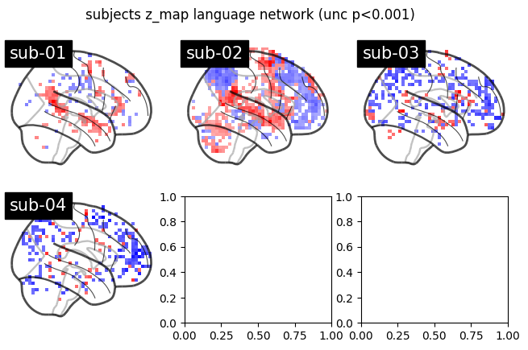

First (single) level analysis - Part 2:#
import io
import nbformat
def execute_notebook(nbfile):
with io.open(nbfile, encoding="utf8") as f:
nb = nbformat.read(f, as_version=4)
ip = get_ipython()
for cell in nb.cells:
if cell.cell_type != 'code':
continue
ip.run_cell(cell.source)
execute_notebook('2_Dataset.ipynb')
execute_notebook('3_First_level_analysis1.ipynb')
[get_dataset_dir] Dataset found in /Users/sophiahaake/nilearn_data/fMRI-language-localizer-demo-dataset
skipping
skipping
/Users/sophiahaake/nilearn_data/fMRI-language-localizer-demo-dataset
.. _language_localizer_dataset:
language localizer demo dataset
===============================
Access
------
See :func:`nilearn.datasets.fetch_language_localizer_demo_dataset`.
Notes
-----
10 subjects were scanned with fMRI during a "language localizer"
where they (covertly) read meaningful sentences (trial_type='language')
or strings of consonants (trial_type='string'),
presented one word at a time at the center of the screen (rapid serial visual presentation).
The functional images files (in derivatives/)
have been preprocessed (spatially realigned and normalized into the :term:`MNI` space).
Initially acquired with a :term:`voxel` size of 1.5x1.5x1.5mm,
they have been resampled to 4.5x4.5x4.5mm to save disk space.
https://osf.io/k4jp8/
Content
-------
:'data_dir': Path to downloaded dataset.
:'downloaded_files': Absolute paths of downloaded files on disk
References
----------
License
-------
ODC-BY-SA
[get_dataset_dir] Dataset found in /Users/sophiahaake/nilearn_data/fMRI-language-localizer-demo-dataset
skipping
skipping
/Users/sophiahaake/nilearn_data/fMRI-language-localizer-demo-dataset
.. _language_localizer_dataset:
language localizer demo dataset
===============================
Access
------
See :func:`nilearn.datasets.fetch_language_localizer_demo_dataset`.
Notes
-----
10 subjects were scanned with fMRI during a "language localizer"
where they (covertly) read meaningful sentences (trial_type='language')
or strings of consonants (trial_type='string'),
presented one word at a time at the center of the screen (rapid serial visual presentation).
The functional images files (in derivatives/)
have been preprocessed (spatially realigned and normalized into the :term:`MNI` space).
Initially acquired with a :term:`voxel` size of 1.5x1.5x1.5mm,
they have been resampled to 4.5x4.5x4.5mm to save disk space.
https://osf.io/k4jp8/
Content
-------
:'data_dir': Path to downloaded dataset.
:'downloaded_files': Absolute paths of downloaded files on disk
References
----------
License
-------
ODC-BY-SA
/var/folders/rg/gfn3fn_s15bb_bs5l1kkblsm0000gn/T/ipykernel_47141/1135415737.py:9: UserWarning: 'StartTime' not found in file /Users/sophiahaake/nilearn_data/fMRI-language-localizer-demo-dataset/derivatives/sub-01/func/sub-01_task-languagelocalizer_desc-preproc_bold.json.
) = first_level_from_bids(
<enumerate object at 0x1530fb7e0>
Subject 1: Design Matrix
language string RotX RotY RotZ X Y \
0.0 0.000000 0.0 0.049782 -0.015877 0.006005 -2.89331 7.02019
1.5 0.000000 0.0 0.049579 -0.015300 0.005969 -2.89903 7.01277
3.0 0.000000 0.0 0.049899 -0.015055 0.005724 -2.88839 7.03311
4.5 0.000416 0.0 0.050209 -0.015752 0.005528 -2.88713 7.02144
6.0 0.057955 0.0 0.049601 -0.015629 0.006192 -2.88762 7.01049
Z drift_1 drift_2 drift_3 drift_4 drift_5 drift_6 \
0.0 -5.27795 0.093452 0.093445 0.093434 0.093419 0.093399 0.093375
1.5 -5.25286 0.093434 0.093375 0.093276 0.093137 0.092960 0.092742
3.0 -5.26949 0.093399 0.093234 0.092960 0.092576 0.092083 0.091482
4.5 -5.27385 0.093346 0.093023 0.092486 0.091735 0.090774 0.089602
6.0 -5.24182 0.093276 0.092742 0.091856 0.090619 0.089037 0.087116
constant
0.0 1.0
1.5 1.0
3.0 1.0
4.5 1.0
6.0 1.0
<enumerate object at 0x1510c9670>
Subject 2: Design Matrix
language string RotX RotY RotZ X Y \
0.0 0.000000 0.0 -0.049952 0.031096 -0.081769 -1.93505 -3.33725
1.5 0.000000 0.0 -0.052543 0.030482 -0.082420 -1.92123 -3.38339
3.0 0.000000 0.0 -0.057430 0.029570 -0.085312 -1.91972 -3.46452
4.5 0.000416 0.0 -0.054868 0.029988 -0.084088 -1.88626 -3.51273
6.0 0.057955 0.0 -0.053298 0.029319 -0.084589 -1.85687 -3.43571
Z drift_1 drift_2 drift_3 drift_4 drift_5 drift_6 \
0.0 -0.193771 0.093452 0.093445 0.093434 0.093419 0.093399 0.093375
1.5 -0.148253 0.093434 0.093375 0.093276 0.093137 0.092960 0.092742
3.0 -0.293911 0.093399 0.093234 0.092960 0.092576 0.092083 0.091482
4.5 -0.143888 0.093346 0.093023 0.092486 0.091735 0.090774 0.089602
6.0 -0.156960 0.093276 0.092742 0.091856 0.090619 0.089037 0.087116
constant
0.0 1.0
1.5 1.0
3.0 1.0
4.5 1.0
6.0 1.0
<enumerate object at 0x15726ecf0>
Subject 3: Design Matrix
language string RotX RotY RotZ X Y \
0.0 0.000000 0.0 0.014264 -0.027363 -0.061099 -1.66021 -0.281034
1.5 0.000000 0.0 0.014611 -0.027769 -0.061864 -1.65561 -0.267233
3.0 0.000000 0.0 0.014800 -0.027716 -0.061828 -1.65565 -0.276454
4.5 0.000416 0.0 0.015154 -0.027191 -0.061873 -1.65813 -0.250126
6.0 0.057955 0.0 0.015895 -0.027241 -0.062071 -1.65616 -0.213499
Z drift_1 drift_2 drift_3 drift_4 drift_5 drift_6 \
0.0 3.82029 0.093452 0.093445 0.093434 0.093419 0.093399 0.093375
1.5 3.78274 0.093434 0.093375 0.093276 0.093137 0.092960 0.092742
3.0 3.81511 0.093399 0.093234 0.092960 0.092576 0.092083 0.091482
4.5 3.78685 0.093346 0.093023 0.092486 0.091735 0.090774 0.089602
6.0 3.75456 0.093276 0.092742 0.091856 0.090619 0.089037 0.087116
constant
0.0 1.0
1.5 1.0
3.0 1.0
4.5 1.0
6.0 1.0
<enumerate object at 0x153e4fa10>
Subject 4: Design Matrix
language string RotX RotY RotZ X Y \
0.0 0.000000 0.0 -0.037851 -0.040735 0.100145 2.28751 2.59566
1.5 0.000000 0.0 -0.037885 -0.040610 0.100149 2.27976 2.58851
3.0 0.000000 0.0 -0.037945 -0.041096 0.100456 2.28213 2.57906
4.5 0.000701 0.0 -0.038530 -0.040913 0.099980 2.28463 2.59449
6.0 0.067908 0.0 -0.038594 -0.040473 0.099267 2.27672 2.61172
Z drift_1 drift_2 drift_3 drift_4 drift_5 drift_6 \
0.0 -6.54900 0.093452 0.093445 0.093434 0.093419 0.093399 0.093375
1.5 -6.53929 0.093434 0.093375 0.093276 0.093137 0.092960 0.092742
3.0 -6.54380 0.093399 0.093234 0.092960 0.092576 0.092083 0.091482
4.5 -6.54513 0.093346 0.093023 0.092486 0.091735 0.090774 0.089602
6.0 -6.55482 0.093276 0.092742 0.091856 0.090619 0.089037 0.087116
constant
0.0 1.0
1.5 1.0
3.0 1.0
4.5 1.0
6.0 1.0
from pathlib import Path
print([Path(run).name for run in models_run_imgs[0]])
['sub-01_task-languagelocalizer_desc-preproc_bold.nii.gz']
print(models_confounds[0][0].columns)
Index(['RotX', 'RotY', 'RotZ', 'X', 'Y', 'Z'], dtype='object')
print(models_events[0][0]["trial_type"].value_counts())
trial_type
language 12
string 12
Name: count, dtype: int64
Here, we specify the significance level for our single level analysis:
from scipy.stats import norm
p001_unc = norm.isf(0.001)
Plotting the z-map#
Finally, we plot the significant z-values for all of our subjects analysed in the first level analysis. We specify our contrast of interest in this step via the .compute_contrast function.
from math import ceil
import matplotlib.pyplot as plt
import numpy as np
from nilearn import plotting # import plotting here
ncols = 3
nrows = ceil(len(models) / ncols)
fig, axes = plt.subplots(nrows=nrows, ncols=ncols, figsize=(8, 4.5))
axes = np.atleast_2d(axes)
model_and_args = zip(models, models_run_imgs, models_events, models_confounds)
for midx, (model, imgs, events, confounds) in enumerate(model_and_args):
# fit the GLM
model.fit(imgs, events, confounds)
# compute the contrast of interest
zmap = model.compute_contrast("language-string")
plotting.plot_glass_brain(
zmap,
colorbar=False,
threshold=p001_unc,
title=f"sub-{model.subject_label}",
axes=axes[int(midx / ncols), int(midx % ncols)],
plot_abs=False,
display_mode="x",
cmap="bwr",
)
fig.suptitle("subjects z_map language network (unc p<0.001)")
plotting.show()

Exception ignored in: <function ResourceTracker.__del__ at 0x1028b5ee0>
Traceback (most recent call last):
File "/opt/miniconda3/envs/NiLearn/lib/python3.13/multiprocessing/resource_tracker.py", line 82, in __del__
File "/opt/miniconda3/envs/NiLearn/lib/python3.13/multiprocessing/resource_tracker.py", line 91, in _stop
File "/opt/miniconda3/envs/NiLearn/lib/python3.13/multiprocessing/resource_tracker.py", line 116, in _stop_locked
ChildProcessError: [Errno 10] No child processes
Exception ignored in: <function ResourceTracker.__del__ at 0x104559ee0>
Traceback (most recent call last):
File "/opt/miniconda3/envs/NiLearn/lib/python3.13/multiprocessing/resource_tracker.py", line 82, in __del__
File "/opt/miniconda3/envs/NiLearn/lib/python3.13/multiprocessing/resource_tracker.py", line 91, in _stop
File "/opt/miniconda3/envs/NiLearn/lib/python3.13/multiprocessing/resource_tracker.py", line 116, in _stop_locked
ChildProcessError: [Errno 10] No child processes